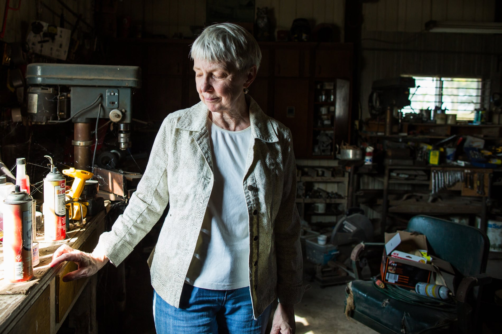

Why are America’s farmers killing themselves in record numbers?
Author: Debbie Weingarten
Published: Dec 6, 2017
The suicide rate for farmers is more than double that of veterans. A former farmer gives an insider’s perspective on farm life – and how to help
It is dark in the workshop, but what light there is streams in patches through the windows. Cobwebs coat the wrenches, the cans of spray paint and the rungs of an old wooden chair where Matt Peters used to sit. A stereo plays country music, left on by the renter who now uses the shop.
“It smells so good in here,” I say. “Like …”
We inhale. “Yes.”
Ginnie pauses at the desk where she found her husband Matt’s letter on the night he died.
“My dearest love,” it began, and continued for pages. “I have torment in my head.”
On the morning of his last day, 12 May 2011, Matt stood in the kitchen of their farmhouse.
“I can’t think,” he told Ginnie. “I feel paralyzed.”
It was planting season, and stress was high. Matt worried about the weather and worked around the clock to get his crop in the ground on time. He hadn’t slept in three nights and was struggling to make decisions.
“I remember thinking ‘I wish I could pick you up and put you in the car like you do with a child,’” Ginnie says. “And then I remember thinking … and take you where? Who can help me with this? I felt so alone.”
Ginnie felt an “oppressive sense of dread” that intensified as the day wore on. At dinnertime, his truck was gone and Matt wasn’t answering his phone. It was dark when she found the letter. “I just knew,” Ginnie says. She called 911 immediately, but by the time the authorities located his truck, Matt had taken his life.
PHOTO: Description of second image
Ginnie describes her husband as strong and determined, funny and loving. They raised two children together. He would burst through the door singing the Mighty Mouse song – “Here I come to save the day!” – and make everyone laugh. He embraced new ideas and was progressive in his farming practices, one of the first in his county to practice no-till, a farming method that does not disturb the soil. “In everything he did, he wanted to be a giver and not a taker,” she says.
After his death, Ginnie began combing through Matt’s things. “Every scrap of paper, everything I could find that would make sense of what had happened.” His phone records showed a 20-minute phone call to an unfamiliar number on the afternoon he died.
When she dialed the number, Dr Mike Rosmann answered.
“My name is Virginia Peters,” she said. “My husband died of suicide on May 12th.”
There was a pause on the line.
“I have been so worried,” said Rosmann. “Mrs Peters, I am so glad you called me.”
Rosmann, an Iowa farmer, is a psychologist and one of the nation’s leading farmer behavioral health experts. He often answers phone calls from those in crisis. And for 40 years, he has worked to understand why farmers take their lives at such alarming rates – currently, higher rates than any other occupation in the United States.
Once upon a time, I was a vegetable farmer in Arizona. And I, too, called Rosmann. I was depressed, unhappily married, a new mom, overwhelmed by the kind of large debt typical for a farm operation.
We were growing food, but couldn’t afford to buy it. We worked 80 hours a week, but we couldn’t afford to see a dentist, let alone a therapist. I remember panic when a late freeze threatened our crop, the constant fights about money, the way light swept across the walls on the days I could not force myself to get out of bed.
“Farming has always been a stressful occupation because many of the factors that affect agricultural production are largely beyond the control of the producers,” wrote Rosmann in the journal Behavioral Healthcare. “The emotional wellbeing of family farmers and ranchers is intimately intertwined with these changes.”
Last year, a study by the Centers for Disease Control and Prevention (CDC) found that people working in agriculture – including farmers, farm laborers, ranchers, fishers, and lumber harvesters – take their lives at a rate higher than any other occupation. The data suggested that the suicide rate for agricultural workers in 17 states was nearly five times higher compared with that in the general population.
After the study was released, Newsweek reported that the suicide death rate for farmers was more than double that of military veterans. This, however, could be an underestimate, as the data collected skipped several major agricultural states, including Iowa. Rosmann and other experts add that the farmer suicide rate might be higher, because an unknown number of farmers disguise their suicides as farm accidents.
The US farmer suicide crisis echoes a much larger farmer suicide crisis happening globally: an Australian farmer dies by suicide every four days; in the UK, one farmer a week takes his or her own life; in France, one farmer dies by suicide every two days; in India, more than 270,000 farmers have died by suicide since 1995.
PHOTO: Description of third image
In 2014, I left my marriage and my farm, and I began to write. I aimed to explore our country’s fervent celebration of the agrarian, and yet how, despite the fact that we so desperately need farmers for our survival, we often forget about their wellbeing.
Four years after contacting Rosmann as a farmer, I am traveling across Iowa with a photographer in an attempt to understand the suicide crisis on America’s farms. It’s been raining all morning – big gray swaths – and we are standing in the entryway of the Rosmanns’ house.
“Should we take off our shoes?” we ask. Mike’s wife, Marilyn, waves us off. “It’s a farmhouse,” she says. On this overcast day, the farmhouse is warm and immaculately decorated. Marilyn is baking cranberry bars in the brightly lit kitchen.
Mike appears a midwestern Santa Claus – glasses perched on a kind, round face; a head of white hair and a bushy white moustache. In 1979, Mike and Marilyn left their teaching positions at the University of Virginia in Charlottesville and bought 190 acres in Harlan, Iowa – near Mike’s boyhood farm. When he told his colleagues that he was trading academia for farm life, they were incredulous.
“I told them farmers are an endangered species, and we need them for our sustenance. I need to go take care of farmers, because nobody else does,” says Rosmann. Once back in Iowa, the Rosmanns farmed corn, soybeans, oats, hay, purebred cattle, chickens and turkeys. Mike opened a psychology practice, Marilyn worked as a nurse, and they raised two children.
When the rain breaks, Mike pulls on muck boots over his pants, and we go outside. He has the slightest limp; in 1990, during the oat harvest, he lost four of his toes “in a moment of carelessness” with the grain combine, an event he describes as life-changing. We are walking through the wet grass toward the cornfield behind his house, when he cranes his head. “Hear the calves bellering?” he asks. “They’ve just been weaned.” We stop and listen; the calves sound out in distressed notes, their off-key voices like prepubescent boys crying out across the field.
In the 1980s, America’s continuing family farm crisis began. A wrecking ball for rural America, it was the worst agricultural economic crisis since the Great Depression. Market prices crashed. Loans were called in. Interest rates doubled overnight. Farmers were forced to liquidate their operations and evicted from their land. There were fights at grain elevators, shootings in local banks. The suicide rate soared.
“What we went through in the 1980s farm crisis was hell,” says Donn Teske, a farmer and president of the Kansas Farmers Union. “I mean, it was ungodly hell.”
PHOTO: Description of fourth image
In the spring of 1985, farmers descended on Washington DC by the thousands, including David Senter, president of the American Agriculture Movement (AAM) and a historian for FarmAid. For weeks, the protesting farmers occupied a tent on the Mall, surrounded the White House, marched along Pennsylvania Avenue. Farmers marched hundreds of black crosses – each with the name of a foreclosure or suicide victim – to the USDA building and drove them into the ground. “It looked like a cemetery,” recalls Senter.
Rosmann worked on providing free counseling, referrals for services, and community events to break down stigmas of mental health issues among farmers. “People just did not deal with revealing their tender feelings. They felt like failures,” says Rosmann.
During the height of the farm crisis, telephone hotlines were started in most agricultural states.
“And what was the impact?”
“We stopped the suicides here,” he says of his community in Iowa. “And every state that had a telephone hotline reduced the number of farming related suicides.”
In 1999, Rosmann joined an effort called Sowing Seeds of Hope (SSOH), which began in Wisconsin, and connected uninsured and underinsured farmers in seven midwestern states to affordable behavioral health services. In 2001, Rosmann became the executive director. For 14 years, the organization fielded approximately a half-million telephone calls from farmers, trained over 10,000 rural behavioral health professionals, and provided subsidized behavioral health resources to over 100,000 farm families.
Rosmann’s program proved so successful that it became the model for a nationwide program called the Farm and Ranch Stress Assistance Network (FRSAN). Rosmann and his colleagues were hopeful that farmers would get the federal support they so desperately needed – but though the program was approved as part of the 2008 US Farm Bill, it was not funded.
While Senator Tom Harkin and other sympathetic legislators tried to earmark money for the FRSAN, they were outvoted. Rosmann says that several members of the House and Senate – most of them Republicans – “were disingenuous”. In an email, Rosmann wrote, “They promised support to my face and to others who approached them to support the FRSAN, but when it came time to vote … they did not support appropriating money … Often they claimed it was an unnecessary expenditure which would increase the national debt, while also saying healthy farmers are the most important asset to agricultural production.”
The program, which would have created regional and national helplines and provided counseling for farmers, was estimated to cost the government $18m annually. Rosmann argues that US farmers lost by suicide totals much more than this – in dollars, farmland, national security in the form of food, and the emotional and financial toll on families and entire communities. In 2014, the federal funding that supported Rosmann’s Sowing Seeds of Hope came to an end, and the program was shuttered.
PHOTO: Description of fifth image
The September sky is chalk gray, and for a moment it rains. John Blaske’s cows are lined up at the fence; cicadas trill from the trees. It’s been a year since he flipped through Missouri Farmer Today and froze, startled by an article written by Rosmann.
“Suicide death rate of farmers higher than other groups, CDC reports,” the headline read.
“I read it 12 or 15 times,” Blaske says, sitting next to his wife Joyce at the kitchen table. “It hit home something drastically.”
In the house, every square inch of wall or shelf space is filled with memorabilia and photos of their six children and 13 grandchildren. Music croons softly from the kitchen radio.
Blaske is tall and stoic, with hands toughened by work and a somber voice that rarely changes in inflection. We’ve been speaking by phone since the winter, when Rosmann connected us. “How’s the weather out there in Arizona?” he would ask at the outset of each phone call. I’ve followed Blaske through multiple health scares and hospital stays, as he has realized that the depression and suicidal thoughts he’s endured alone for years are common among farmers.
The first time we spoke, Blaske told me, “In the last 25 to 30 years, there’s not a day that goes by that I don’t think about suicide.”
The CDC report suggested possible causes for the high suicide rate among US farmers, including “social isolation, potential for financial losses, barriers to and unwillingness to seek mental health services (which might be limited in rural areas), and access to lethal means”.
For a farmer, loss of land often cuts deeper than a death, something Blaske understands firsthand. On Thanksgiving Day in 1982, a spark shot out from Blaske’s woodstove to a box of newspaper. The fire climbed curtains, melted doors, burned most of the house. The Blaskes became homeless.
Soon after the fire, the farm crisis intensified. The bank raised their interest rate from seven to 18%. Blaske raced between banks and private lenders, attempting to renegotiate loan terms. Agreements would be made and then fall through. “They did not care whether we had to live in a grader ditch,” remembers Blaske.
Desperate, the family filed for bankruptcy and lost 265 acres. For the first time, Blaske began to think of suicide.
PHOTO: Description of sixth image
Much of the acreage lost to the Blaskes sits across the road from the 35 acres they retain today. “I can’t leave our property without seeing what we lost,” Blaske frets. “You can’t imagine how that cuts into me every day. It just eats me alive.”
Rosmann has developed what he calls the agrarian imperative theory – though he is quick to say it sits on the shoulders of other psychologists. “People engaged in farming,” he explains, “have a strong urge to supply essentials for human life, such as food and materials for clothing, shelter and fuel, and to hang on to their land and other resources needed to produce these goods at all costs.”
When farmers can’t fulfill this instinctual purpose, they feel despair. Thus, within the theory lies an important paradox: the drive that makes a farmer successful is the same that exacerbates failure, sometimes to the point of suicide. In an article, Rosmann wrote that the agrarian imperative theory “is a plausible explanation of the motivations of farmers to be agricultural producers and to sometimes end their lives”.
Since 2013, net farm income for US farmers has declined 50%. Median farm income for 2017 is projected to be negative $1,325. And without parity in place (essentially a minimum price floor for farm products), most commodity prices remain below the cost of production.
In an email, Rosmann wrote, “The rate of self-imposed [farmer] death rises and falls in accordance with their economic well-being … Suicide is currently rising because of our current farm recession.”
Inside the sunny lobby of the newly remodeled Onaga community hospital, where Joyce Blaske happens to work in the business department, Dr Nancy Zidek has just finished her rounds. As a family medicine doctor, she sees behavioral health issues frequently among her farmer patients, which she attributes to the stressors inherent in farming.
“If your farm is struggling, you’re certainly going to be depressed and going to be worried about how to put food on the table, how to get your kids to college,” she says.
PHOTO: Description of seventh image
In August 2017, Tom Giessel, farmer and president of the Pawnee County Kansas Farmers Union produced a short video called “Ten Things a Bushel of Wheat Won’t Buy”. At $3.27 per bushel (60lb), Giessel says, “The grain I produce and harvest is my ‘currency’ and it is less than one-fifth of what it should be priced.”
He shows snapshots of consumer goods that cost more than a bushel of wheat: six English muffins, four rolls of toilet paper, a single loaf of bread – even though one bushel of wheat is enough to make 70 one-pound breadloaves.
Dr Zidek says the wellbeing of farmers is inextricably linked to the health of rural communities. “The grain prices are low. The gas prices are high. Farmers feel the strain of ‘I’ve got to get this stuff in the field. But if I can’t sell it, I can’t pay for next year’s crop. I can’t pay my loans at the bank off.’ And that impacts the rest of us in a small community, because if the farmers can’t come into town to purchase from the grocery store, the hardware store, the pharmacy – then those people also struggle.”
Indeed, it is Saturday afternoon, and downtown Onaga is practically deserted. There’s a liquor store, a school, a few churches, a pizza place, a youth center and boarded-up storefronts. “You need to have a family farm structure to have rural communities – for school systems, churches, hospitals,” says Donn Teske of the Kansas Farmers Union. “I’m watching with serious dismay the industrialization of the agriculture sector and the depopulation of rural Kansas … In rural America,” he adds, “maybe the war is lost.”
After finding the article in Missouri Farmer Today, John Blaske decided to contact Rosmann. But the article listed a website, and the Blaskes did not own a computer. So he drove to the library and asked a librarian to send an email to Rosmann on his behalf. A few days later, as Blaske was driving his tractor down the road, Rosmann called him back.
“He wanted to hear what I had to say,” Blaske says. “Someone needs to care about what’s going on out here.”
Since the 1980s farm crisis, Rosmann says experts have learned much more about how to support farmers. Confidential crisis communication systems – by telephone or online – are effective, but staff need to be versed in the reality and language of agriculture.
“If you go to a therapist who may know about therapy but doesn’t understand farming, the therapist might say, ‘Take a vacation – that’s the best thing you can do.’ And the farmer will say, ‘But my cows aren’t on a five-day-a-week schedule.’”
PHOTO: Description of eighth image
Affordable therapy is critical and inexpensive to fund – Rosmann says many issues can be resolved in fewer than five sessions, which he compares to an Employee Assistance Program. Medical providers need to be educated about physical and behavioral health vulnerabilities in agricultural populations, an effort Rosmann is working on with colleagues.
John Blaske says painting helps. When he’s feeling up to it, he paints heavy saw blades with detailed farmscapes. Counseling and medication have also helped, but he craves conversation with farmers who know what he’s experiencing. “I would really give about anything to go and talk to people,” he says. “If any one person thinks they are the only one in this boat, they are badly mistaken. It’s like Noah’s Ark. It’s running over.”
Inside the farmhouse, Blaske places two journals in my hands. They’re filled with memories of walking through town barefoot as a child, how his mother would pick sandburs out of his feet at night; about the years he worked full-time at the grain elevator, only to come home to farmwork in the dark and counting cows by flashlight.
The image of Blaske on the farm, illuminating the darkness, is a powerful one. “Sometimes the batteries were low and the light was not so bright,” he wrote, “But when you found the cow that was missing, you also found a newborn calf, which made the dark of night much brighter.”
In the US, the National Suicide Prevention Lifeline is 1-800-273-8255. In the UK the Samaritans can be contacted on 116 123. In Australia, the crisis support service Lifeline is on 13 11 14. Other international suicide helplines can be found at www.befrienders.org.